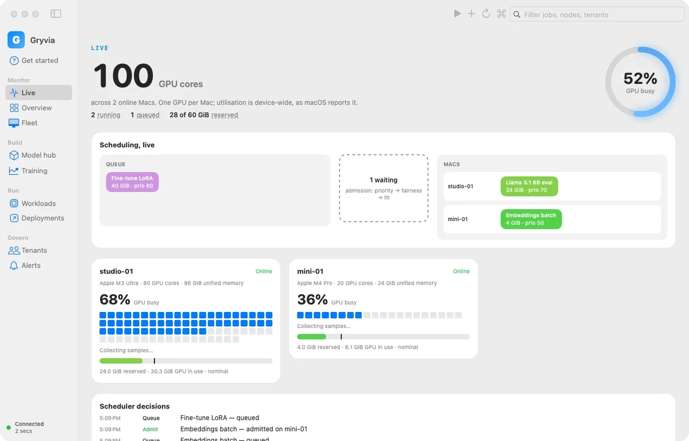
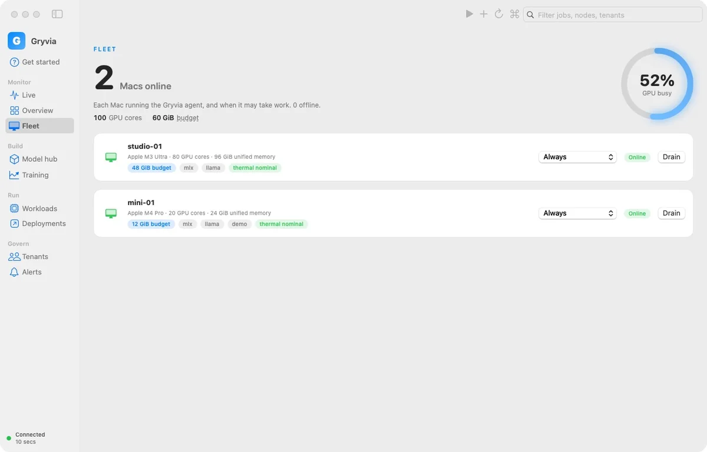
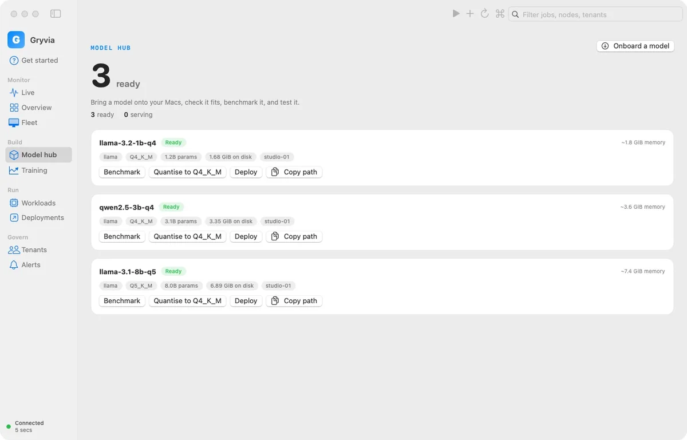
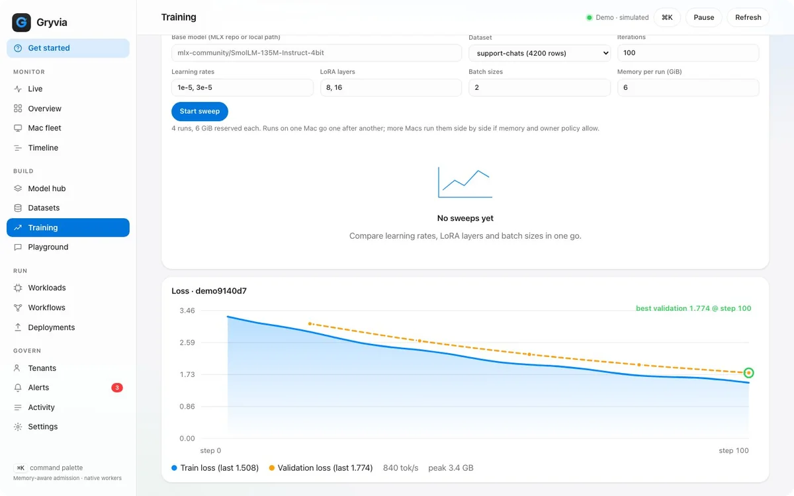
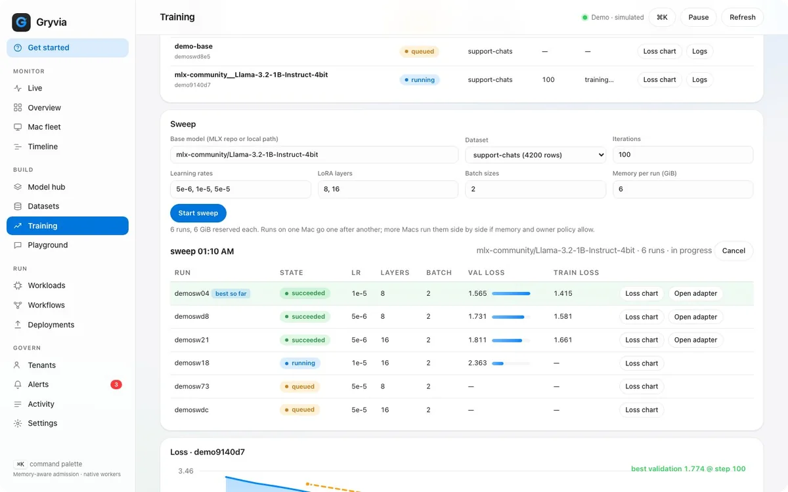

Gryvia for Apple silicon
Gryvia
Your Macs, scheduled.
A control plane for Apple silicon fleets. Memory-aware admission, quotas, live GPU cores and signed provenance in a notarized Mac app. Gryvia admits and places inference, fine-tuning and benchmark jobs against each Mac's unified-memory budget.
Download the 30-day trialLearn more
macOS 15 or later · Apple silicon · notarized · Free 30-day trial key: sales@zyvor.dev

Several Macs, several people, one queue.
Gryvia decides which whole job runs on which Mac, in what order, and under whose quota.
Features
Live
Every Mac, counted.
GPU cores and measured busy percentage straight from macOS, memory reservations by job, and the scheduler's reasoning as it happens.
Getting started
Fleet
Owners stay in control.
Each Mac chooses when it may run fleet work: always, only when its owner is away, or paused, with battery and call guards.
User guide
Model hub
Models, measured.
Onboard from Hugging Face with a size cap and SHA-256, then benchmark and evaluate on any Mac.
User guide
Training
Fine-tune with the loss in view.
MLX LoRA runs report train and validation loss as they go; the best checkpoint is marked, and the adapter keeps its lineage.

Sweep
Sweep a grid, keep the best.
One fine-tune fans out over learning rates, LoRA layers and batch sizes as ordinary queued jobs, so quotas and owner policy still apply. Runs are ranked by validation loss.

And the rest of the toolbox.
One endpoint
An OpenAI-style gateway with streaming. Deploy on one Mac or several; a request tries one other replica before returning 502, and a stream fails over only before its first byte. Replicas across two physical Macs are not yet measured.
Fits before it runs
Check that a model fits before you download it (the fit figure is an estimate). Open a queued job to see why it is waiting.
Quotas and fairness
Priorities, tenant quotas, GiB-hour budgets and fairness weights. Tenant tokens see and act only on their own jobs.
Assistants and Shortcuts
The MCP server is read-only by default; write tools exist only when it is started with write access. Shortcuts actions cover fleet status, a demo job and pausing a Mac.
Trust, stated plainly.
Signed provenance
Agents sign a statement for each finished job binding the job, its spec hash and its result. This is fleet-internal provenance, not a global supply-chain guarantee.
Outbound only
Agents poll your control plane outbound. Nothing is sent to Zyvor. Models are downloaded only from huggingface.co or hf.co, with a size cap and a recorded SHA-256.
No sandbox
Runtimes are not sandboxed, so enrol only Macs you would let an admin run code on.
Specs and requirements.
- Requires
- macOS 15 or later
- Chip
- Apple silicon
- Build
- Signed and notarizedDeveloper ID signed and notarized.
- Version
- 0.5.2Free 30-day trial key: sales@zyvor.dev
- Runtimes
- llama.cpp, MLX, Core MLWrappers ship in the app; runtimes are enabled per Mac.
- Data
- Agents poll outboundNothing is sent to Zyvor.
Honest limits
One GPU per Mac; GPU utilisation is device-wide, not per job; reservations are admission bookkeeping, not isolation; energy is an estimate; training is single-Mac LoRA. Replicas across two physical Macs are not yet measured. There is no sandbox around runtimes. See SECURITY.md.
Get started in three steps.
Download
Get
Gryvia-0.5.2.dmgand its.sha256checksum from the release page. The DMG is Developer ID signed and notarized.Verify and install
Check the download with
shasum -a 256 -c, open the DMG and drag Gryvia.app to Applications. Paste an admin token once; it goes to your login Keychain.Add a Mac
Use Add a Mac to create a single-use join code (valid 15 minutes) and enter it on the new Mac. Press Run demo job to see admission, a lease and a result.
Gryvia 0.5.2 for Mac · SHA-256
a1e406d73bffd4492f4876f577b498ffc4bb0a1a26b46d71775ae06dd4d8251dVerify: echo "a1e406d73bffd4492f4876f577b498ffc4bb0a1a26b46d71775ae06dd4d8251d Gryvia-0.5.2.dmg" | shasum -a 256 -c
Try it free for 30 days. Pay to run it for real work.
Free 30-day trial key: sales@zyvor.dev. Running it for real work, at home or in a business, needs a plan, and the lowest plan is for one person. Every plan includes the same Developer ID signed and notarized build and a GST invoice.
More than 25 Macs or several entities: custom terms and support, write to sales@zyvor.dev. No redistribution or resale. Business plans are invoiced for now: write to sales@zyvor.dev and you get a GST invoice and a download link. This is a plain-language summary; the LICENSE file is what counts, and it applies to versions after v0.4.0 (v0.4.0 and earlier keep their original personal-use grant). Licence terms (draft). More at zyvor.dev/buy.
Questions, answered.
Is the source code available?
No. The Gryvia Apple source code is private. This repository holds documentation, this website and the downloads. The licence text is in LICENSE.
How do I try it, and what needs a plan?
Write to sales@zyvor.dev for a free 30-day trial key. The trial is soft: nothing is disabled and no data is lost when it ends. Running it for real work, whether you are one person at home (Personal plan) or a business (Solo, Team or larger), needs a plan from zyvor.dev/buy. v0.4.0 and earlier were released with a free personal-use grant, which stays valid for those versions. The LICENSE file is the authority; ask sales@zyvor.dev if your case is unclear.
Does it split one model across several Macs?
No. For that, look at exo or MLX distributed. Gryvia decides which whole job runs on which Mac and under whose quota.
Is GPU utilisation per job?
No. It is the whole Mac's GPU load as macOS reports it, including other apps. Reservations are admission bookkeeping and energy figures are estimates.
What is measured, and what is not?
GPU core counts and utilisation come from macOS (the IORegistry, no sudo) and were matched against ioreg on a dev Mac and a Mac mini in a dated validation run on 2026-10-14. Replicas across two physical Macs are not yet measured, and in that run the Metal, MLX and llama runtimes, GPU throughput and isolation, and the energy helper on real hardware were not verified.
Can I use a Mac that someone is also working on?
Yes: set its policy to “only when I am away”. Work starts after the idle time you choose and yields when the owner returns. Battery, Low Power Mode and call guards apply.
What does it send where?
Agents poll your control plane outbound. Nothing is sent to Zyvor. Models are downloaded only from huggingface.co or hf.co, with a size cap and a recorded SHA-256.
Do deployed models hold memory forever?
Only until you stop them. Idle eviction is opt-in; there is no autoscaler, and the next request does not redeploy a model automatically.
Which Macs and runtimes?
Apple silicon on macOS 15 or later. llama.cpp (GGUF), MLX and Core ML wrappers ship in the app, and runtimes are enabled per Mac.